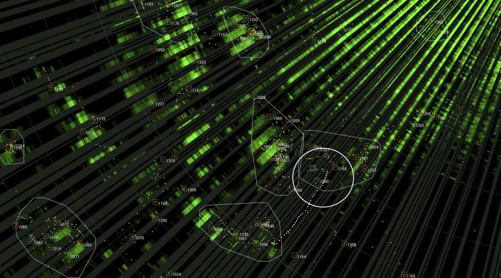
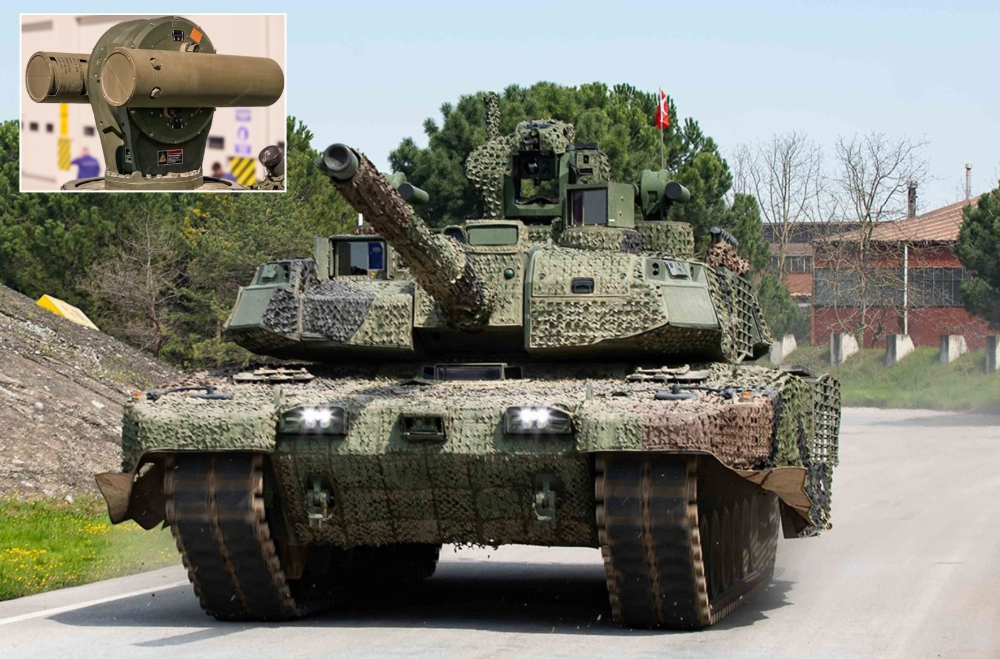
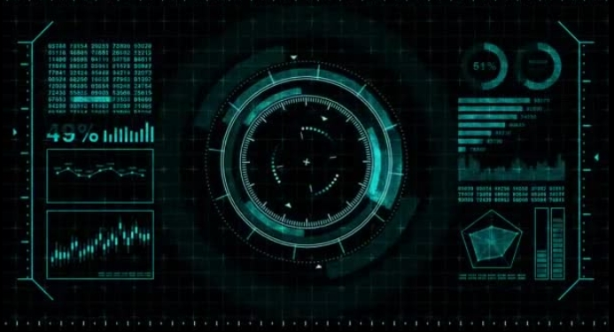

ZONT is a next-generation defense technology concept focused on advanced protection systems for modern combat environments. The project is designed to explore how intelligent defensive platforms can improve survivability against fast and complex threats.
Today, ZONT focuses on AI-assisted hard-kill protection systems, combining radar monitoring, automated threat tracking, and rapid-response countermeasures. The system is designed with an emphasis on speed, precision, reliability, and adaptability.



The AI Hard-Kill Protection System uses advanced artificial intelligence to detect, track, and neutralize incoming threats in real time. The system integrates radar sensors and automated countermeasures to respond within milliseconds.
By combining high-speed tracking and intelligent targeting, the system improves survivability and enhances defensive capability in modern combat environments.
Project Team: David & DYK
ZONTIK-1 is a next-generation active protection system designed to detect, track, and neutralize incoming threats. It combines advanced radar monitoring with rapid-response countermeasures to improve survivability and defensive capability in high-risk environments.
Download the system brochure and technical specifications.
Download Brochure